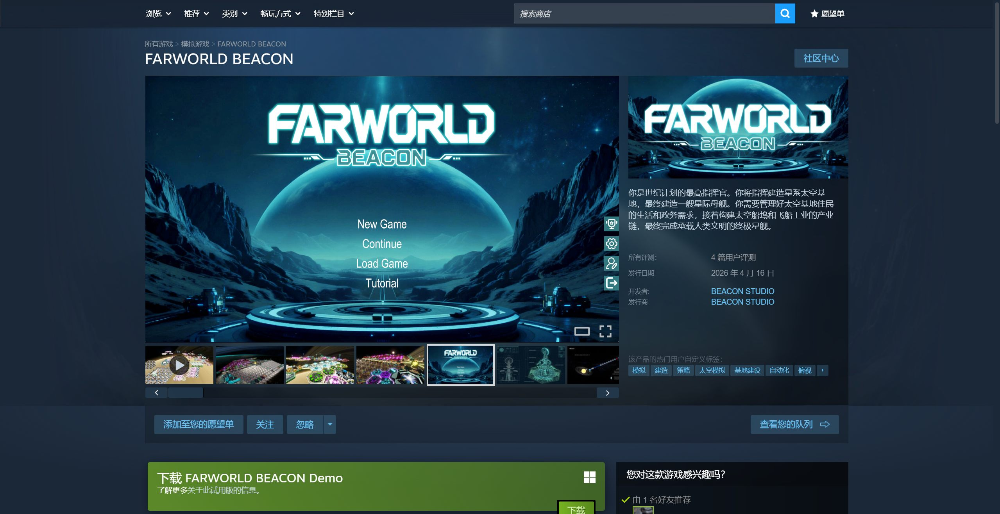
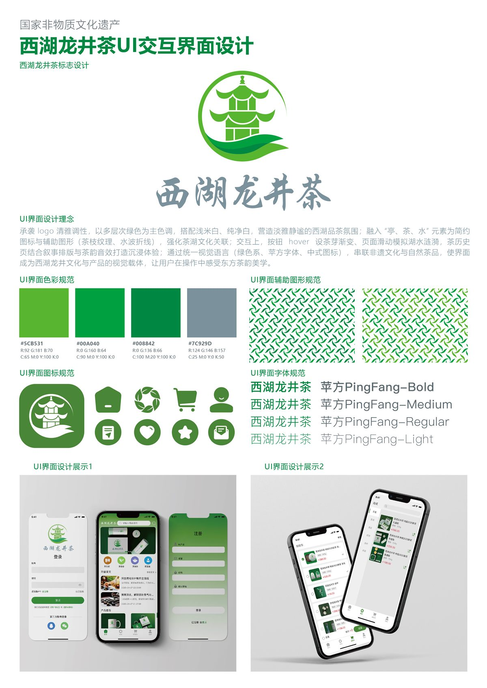
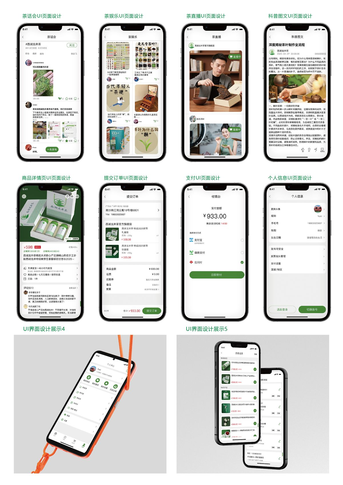
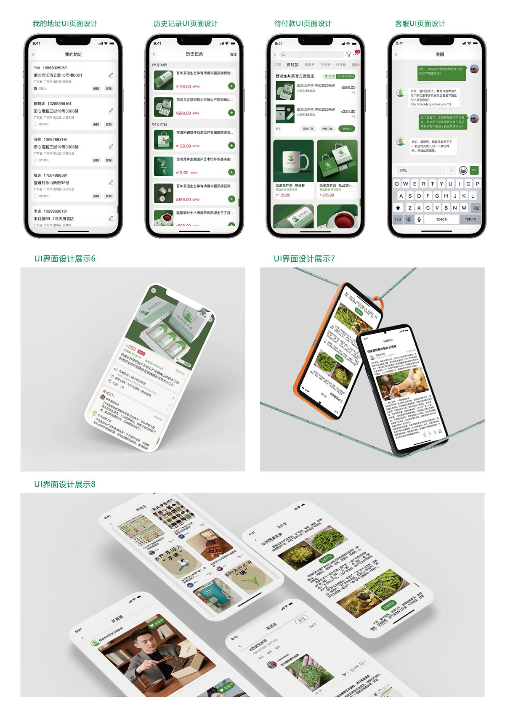

01 · Game / Simulation
FARWORLD BEACON
经营星际基地、维持居民需求、搭建工业链，并以完成星际母舰为长期目标的模拟策略游戏。

已显示 9 项
01 · Game / Simulation
经营星际基地、维持居民需求、搭建工业链，并以完成星际母舰为长期目标的模拟策略游戏。

02 · Game / CGJ
在损坏的关卡编辑器中移动道具锚点，通过逐拍运行改变旋转、伸缩与弹射结果。
03 · Graduation project
用 3D 水墨风组织昼夜建设、资源采集、抽卡绘塔与守城战斗的策略塔防游戏。
04 · Game / CGJ
围绕“办公桌用品暴揍老板”展开的限时 Game Jam 游戏，以快速原型验证战斗概念。
05 · UI / Interaction
从信息架构、品牌语言到商城、内容社区与个人中心的完整移动端设计练习。





06 · Graphic / Drawing
以单体、组合静物和色彩练习，整理体积、明暗、构图与材质观察能力。
07 · 3D / PBR
Blender 建模与渲染，Substance Painter 烘焙和贴图绘制，并保留材质通道成果。
08 · Character design / Modeling
从角色概念线稿与服装设计，延伸到 IP 三视图、3D 雕刻、材质和情境渲染。
09 · 3D / Environment
用两组雪景构图测试色温、层次、主体对比与叙事氛围。